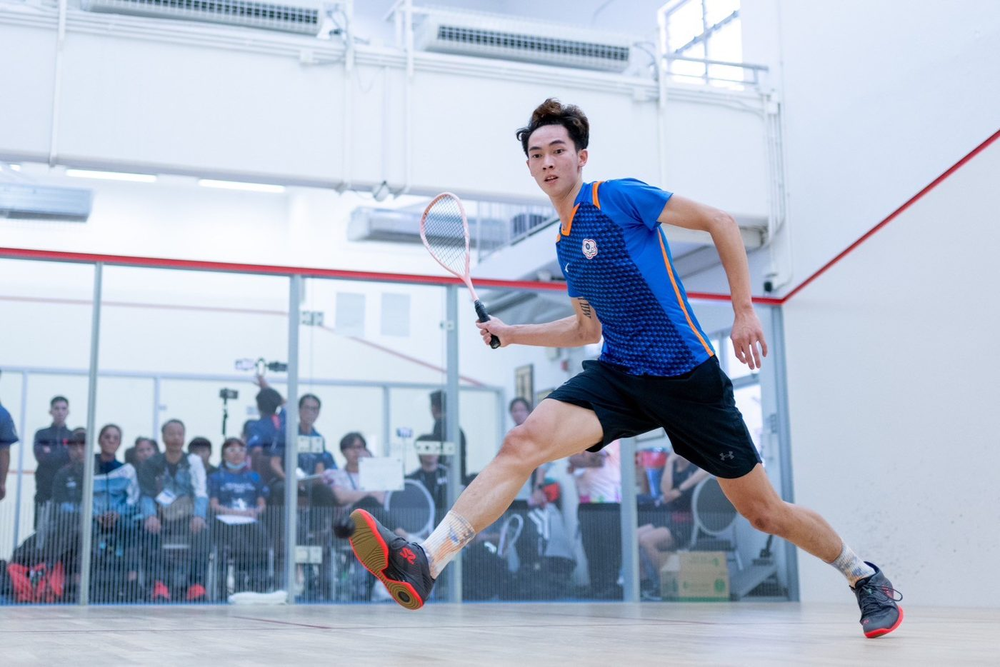
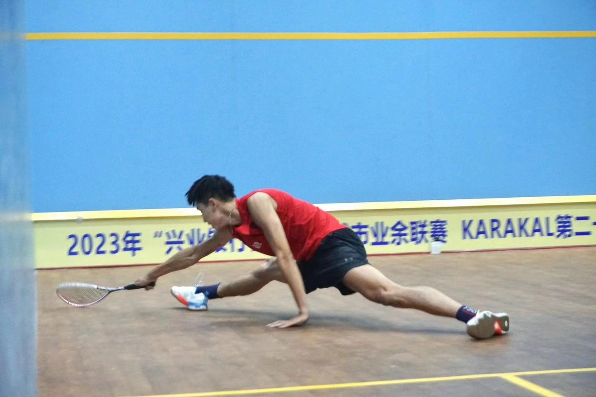

01我的故事
耐思(Nice)
我是陳玟霖，15歲才接觸壁球，雖然比別人晚起步，但秉持著對壁球的熱愛，每天下課就接受教練的指導及規律的訓練體能，透過不斷的努力、堅持，在國內參加的比賽都是第一名，期間也取得代表國家參賽的資格，從青少年到現在都是國手，經過這幾年出國比賽的經驗，讓我知道打壁球一定要有耐心，且需要有精準的判斷及擊球策略，每場比賽經驗都將成為我的養分，讓我思考如何贏得下一場比賽，並不斷加強、調整自我訓練，激發自己的潛能。


我是陳玟霖，15歲才接觸壁球，雖然比別人晚起步，但秉持著對壁球的熱愛，每天下課就接受教練的指導及規律的訓練體能，透過不斷的努力、堅持，在國內參加的比賽都是第一名，期間也取得代表國家參賽的資格，從青少年到現在都是國手，經過這幾年出國比賽的經驗，讓我知道打壁球一定要有耐心，且需要有精準的判斷及擊球策略，每場比賽經驗都將成為我的養分，讓我思考如何贏得下一場比賽，並不斷加強、調整自我訓練，激發自己的潛能。


歷屆成績 · 更新於 2025/12/15
2025第16屆東亞壁球錦標賽_20250515台灣vs.日本
2025第16屆東亞壁球錦標賽_20250515台灣vs.澳門
訓練與參賽計畫
未來兩年想挑戰自己，參加國際職業壁球協會(PSA)排名積分賽，可與更多壁球佼佼者交手，以提升自己在壁球領域的實力，將善用贊助資金取得好成績，用實際行動讓世界看到臺灣，更會持續代表國家出賽，替台灣爭取佳績。
善用經費於訓練、場地費、比賽之旅費、治療和運動專門等用途，提升技術的同時，加強身體素質，以爭取在奧運、亞運和職業壁球協會(PSA)亞洲區域舉辦之排名積分賽，取得佳績。
我想達到…
(1)加強個人專長技術，缺點技術補強之訓練。
(2)針對性訓練：針對主要對手打法、習慣、配合個人打法實施訓練。
(3)心智訓練：訓練選手集中精神、意志堅定，於激戰中能控制情緒，隨機應變及預測的能力。
積極參加國際賽事及職業壁球協會(PSA)亞洲區域舉辦之排名積分賽，以賽代訓，增加經驗，以訓練以下內容：
(1)比賽關鍵時刻的心理建設。
(2)面對選手的打法與戰術上之配套訓練。
(1)保持體能及手感，並針對患部進行復健治療。
(2)影片觀摩：蒐集各國選手影片，瞭解及研究各國選手打法，技術、戰術，藉以提高應付能力，期於比賽時獲得勝利。
1.肌耐力、重量訓練
2.速度訓練
3.敏捷性、協調性訓練
4.爆發力訓練
1.隨拍擊扣拍應用、穩定訓練
2.腳步移位訓練
3.回球的穩定性及力量控制
4.擊球準確率、變化訓練
1.擊球品質及擊球點準確度
2.高吊球、小球穩定及品質
3.直線與斜線殺球品質
4.技戰術思考及判斷練習
1.比賽中的抗壓能力
2.比賽前及比賽後的心理素質
3.賽後檢討
需求項目與數量（依官方頁面）
| 選手營養費 | NT$ 73,000 |
| 運動防護費 | NT$ 144,000 |
| 參賽報名費 | NT$ 48,000 |
| 參賽旅運費 | NT$ 560,000 |
| 選手零用金 | NT$ 128,000 |
| 訓練器材裝備費 | NT$ 28,000 |
| 經費需求合計 | NT$ 981,000 |
標示「不公開」者為官方頁面未揭露之欄位。
網路公開搜尋結果，均附原始出處
報導提到陳玟卉的弟弟陳玟霖是壁球國手。
出處：https://newtalk.tw/news/view/2021-07-28/611347申請者於體育署捐贈媒合平臺自填的相關連結。
出處：https://www.squash.org.tw/news_info/12/1/299申請者於體育署捐贈媒合平臺自填的相關連結。
出處：https://www.squash.org.tw/news_info/12/1/302申請者於體育署捐贈媒合平臺自填的相關連結。
出處：https://unews.nccu.edu.tw/unews/%EF%BC%88%EF%BD%86%EF%BC%89%E5%A3%81%E7%90%83%E9%8C%A6%E6%A8%99%E8%B3%BD%E5%9C%8B%E9%9A%9B%E4%BA%A4%E6%B5%81%E3%80%80%E9%99%B3%E7%8E%9F%E9%9C%96%E6%94%BE%E7%9C%BC%E6%B4%9B%E6%9D%89%E7%A3%AF%E5%A5%A7/申請者於體育署捐贈媒合平臺自填的相關連結。
出處：https://sport-islander.com/squash_interview_chen/